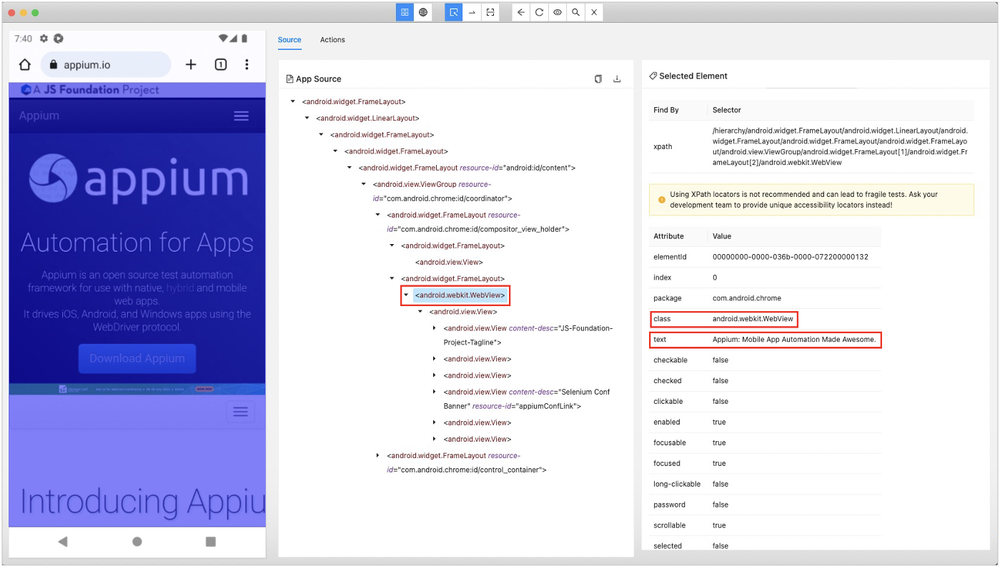

webTitle selector
webTitle selector
webTitle selector is special selector to identify screen in browser.
Let’s see “https://appium.io/” in Google Chrome in Appium Inspector.

You can use webTitle selector as follows.
~webTitle=Appium: Mobile App Automation Made Awesome.
webTitle selector is expanded at runtime as follows.
.android.webkit.WebView&&Appium: Mobile App Automation Made Awesome.
The rules of expansion are built in the test framework. You can override them in testrun file.
android.webTitleSelector=.android.webkit.WebView&&${webTitle}
ios.webTitleSelector=<.XCUIElementTypeWebView>:descendant(${webTitle}&&visible=*)